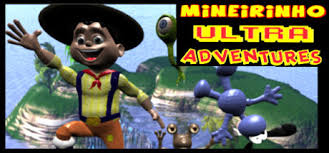
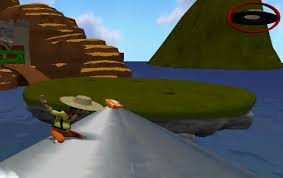
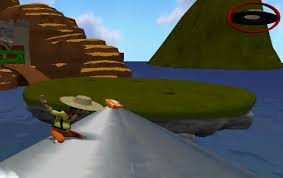

Introdução
Mineirinho Ultra Adventures, ou para os já iniciados, Mineirinho, é um jogo extremamente completo, de tal modo que nem precisa de um enredo ou uma história, seu objetivo no jogo é assassinar, atráves de chapeladas (no sentido de bater com um chapéu) e uma guerra de comida, todos os alienígenas malvados que querem impedir os habitantes da Terra de comer no melhor restaurante do mundo.
Um dos melhores jogos de todos os tempos
Mineirinho é, sem dúvidas, um dos melhores jogos já criados pela humanidade, se você não pensa assim, vá se tratar algumas
suas frases icônicas, movimentação diferenciada, gráficos melhores do que os da própria realidade e jogabilidade excelente, nos fazem ter uma
experiência única e extremamente marcante.
Jogabilidade
Alguns noobs jogadores reclamam que a jogabilidade é ruim e que o jogo é muito díficil, porém tudo depende da habilidade
do player comandando nosso herói Mineirinho. Esta habilidade pode ser adquirida facilmente e quando você se acostuma, entende mais um pouco da perfeição
do jogo.
Gráficos
Os gráficos deste jogo são sensacionais, não tenho nem palavras para descrevê-los, observem perplectos tamanha beleza nas imagens a seguir:
.jpg) 

.jpg)
Não vemos coisas lindas assim no cotidiano, é incrivelmente real a qualidade gráfica desse game.
Opinião de todo ser racional
"Joguem muito, aproveitem cada "AI AI AI AI AI", cada "PIZZA MALUCAAA", cada "HAMBURGÃÃÃÃO" como se fosse o seu último dia da Terra."
-Arthur Coelho